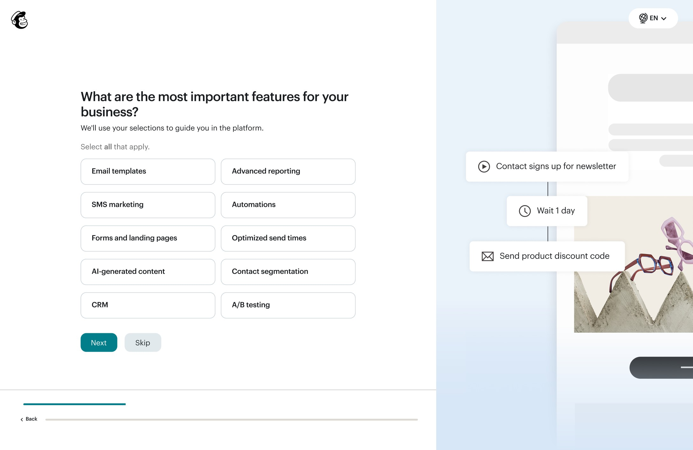
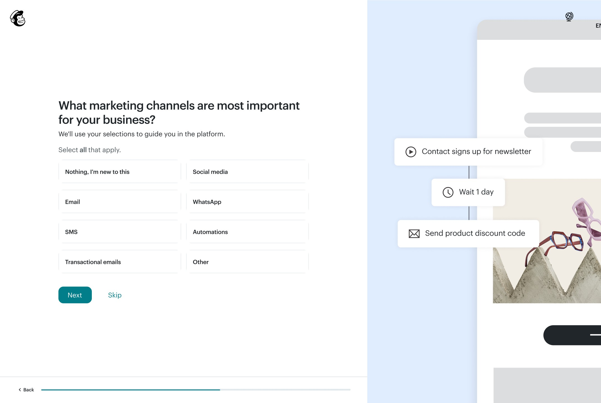
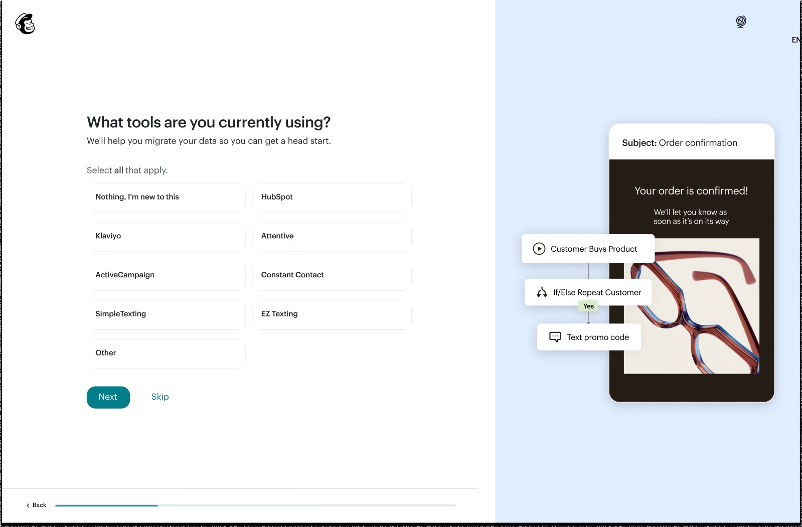
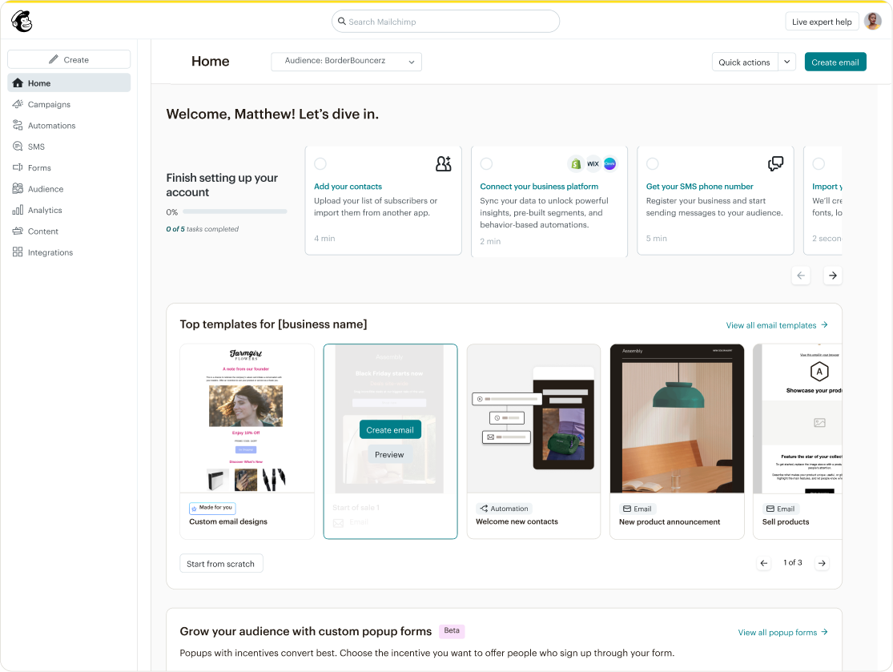
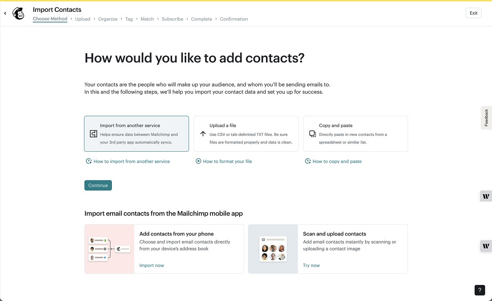

WHAT'S NEXT
User testing surfaced one clear signal: people wanted more tools to choose from.
That feedback is now on the roadmap for a future iteration, likely a searchable list instead of a fixed set.
I designed an experience in the onboarding flow to capture data on SMS switchers and intent customers, personalizing their Account Setup checklist on Homepage.
Account Setup onboarding flow, with a personalized Homepage checklist
1 Product Manager · 3 Engineers · 1 Designer (me) · 2 SMS Designers
Product Design · User Research · Prototyping
Mailchimp found that a significant share of new users aren't new to email marketing at all. Around 44% are switching from another email service provider, facing two challenges at once: migrating their data and learning a new platform. To win and retain them, Mailchimp needed to make that transition feel seamless, but the onboarding flow never asked, so it never adapted.
The solution: a short, targeted question during signup that identifies email, SMS, or both-channel switchers, then personalizes their Account Setup checklist on Homepage with a high-priority task to sync contacts from their previous tool.
Mailchimp had never added a highly personalized question to Account Setup, so this was a genuine experiment: would capturing intent that early increase task completions like importing contacts and migrating data? It also lined up with two FY26 goals already in motion, growing integrations through earlier data collection, and increasing activation for SMS and WhatsApp.
| Metric | Paid Users | Free Users |
|---|---|---|
| Customers activated weekly | 5,825 | 18,744 |
| % replacing an existing tool | 14% | 21% |
| % supplementing an existing tool | 30% | 32% |
| Total % of "switchers" | 44% | 53% |
| # of switchers | 2,563 | 9,934 |
| % 60D retention | 76% | 5% |
| % lift in retention (opportunity) | 8% | 8% |
| # of customers retained | 156 | 40 |
| AOV | $48 | $13 |
| Retained $s | $7,480 | $517 |
| Single cohort 12m value | $48,769 | $3,368 |
| Total annual value | $352,301 | $24,331 |
SWAG sizing of the revenue opportunity from ESP switchers.
The project split into three problems: what new question to ask, which concept to build it around, and how to turn the answer into something useful downstream. Concept testing, user testing, and the final Homepage integration each pushed the design in a different direction.
The current Account Setup flow already asked users what marketing features mattered most to their business, but that question only gave the SMS team weak signal, under 30%. I proposed shifting the language and options from features to channels instead. It surfaced more useful signal for both email and SMS, and freed up room for a new, personalized switcher screen right after it.


Right after the new channels question, I added a "What tools are you currently using?" screen that adapts to whatever the user picked: SMS switchers see texting platforms, email switchers see ESPs, and anyone who picked both, or skipped the question, sees a broader, generic set. I concept-tested four directions before landing here. The two-screen version I'd considered risked boxing users into only email and SMS, and its language wasn't inclusive of intent customers, so a single, conditional screen won out.

Once the personalized flow was finalized, I designed logic for a new Homepage checklist task that adapts to what the user told us. Pick exactly one tool and the task gets specific, "Add your contacts from Klaviyo," using their own tool as the example. Pick more than one, pick "other," or skip the question entirely, and it falls back to a general "Add your contacts" card. It's always the first item on the checklist, right where switchers will see it.


User testing surfaced one clear signal: people wanted more tools to choose from.
That feedback is now on the roadmap for a future iteration, likely a searchable list instead of a fixed set.